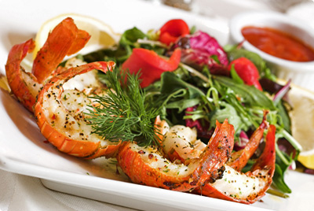

Welcome!

The Rio is a fish restaurant catering for the take away trade as well providing restaurant facilities. The fish as you would expect is freshly caught and you can tell!.,. Situated about 50 yards from the harbour side, you are assured of quality meal in this lovely little place.They try very hard to make you welcome and you can feel it - enjoy.
Our History
We at Ceruttis have over 40 years experience within the catering industry and are confident of the service we provide.Here at Ceruttis our team of highly trained chefs are proud and committed to providing top quality food of the highest standard and are able to cater for all tastes.
Our Events

If you require a top quality restaurant that provides food at the highest standard in Hull, Beverly and East Yorkshire then contact us.Ceruttis: a leading, well-established company for restaurants, fish restaurants and seafood restaurants.We look forward to hearing from you!